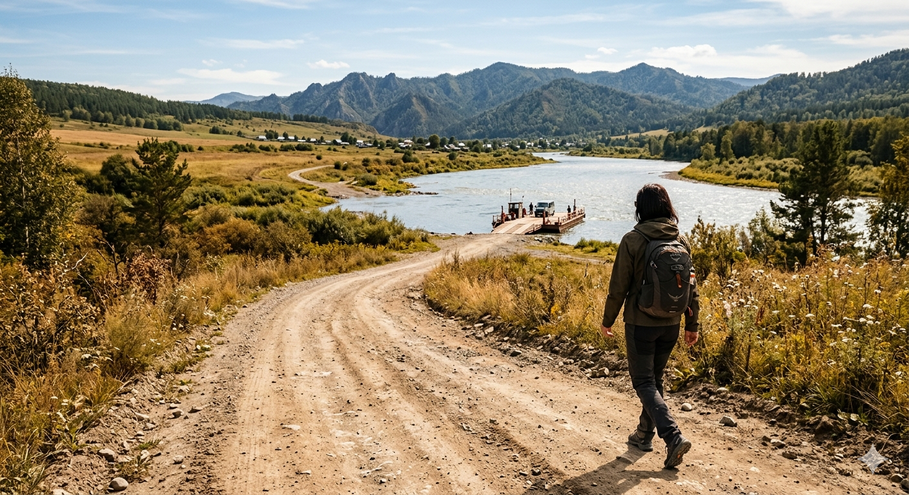

Dónde estacionar en Aguas Blancas si cruzás a pie

Mi padrastro lleva el Gol Trend desde 2017 y todavía no lo robaron en Aguas Blancas. Esa es la buena noticia. La mala: dos veces le quebraron una ventanilla por dejar la mochila a la vista. El estacionamiento en Aguas Blancas no es complicado, pero hay tres detalles que cambian la experiencia.
Las tres opciones reales
1. Playa al lado del puente internacional
Es la más visible y la más cara. Cobra entre $3.000 y $4.000 ARS por día (mediados de 2026) y tiene cuidador hasta las 22 hs aproximadamente. Recibe boleto. Si cruzás temprano y volvés a la tarde, es la opción cómoda.
2. Playas particulares en las casas frente al río
Los vecinos del barrio Aguas Blancas alquilan el patio o un terreno al frente. Cobran $1.500 a $2.500 ARS por todo el día. No dan boleto: pagás, te dicen "déjelo allá", y listo. Algunos te ofrecen lavarte el auto por $1.000 más mientras estás en Bermejo. Es informal pero funciona.
3. Dejarlo en la estación de servicio de Pichanal o Embarcación
Esto lo hace gente que viene desde Salta capital. Dejan el auto en la YPF de Pichanal y se toman remís hasta Aguas Blancas (~$8.000 ARS por trayecto). Tiene sentido si vas a quedarte varios días en Bermejo y no querés dejar el vehículo expuesto.
Qué NO dejar en el auto
Esto es lo importante. Por orden de "se llevan primero":
- Mochila o bolso a la vista. Aunque tenga ropa sucia, vuelan ventanillas por eso.
- Celular cargando o GPS encajado. Sacalos del soporte y guardalos.
- Cartera del auto, papeles del seguro, libreta: sí dejarlos en la guantera, pero cerrarla con llave.
- Compras anteriores: si ya hiciste compras antes en otro lado, no las dejes visibles. Pasalas al baúl.
Tres datos prácticos
- Llevá pesos en efectivo. No aceptan transferencia ni QR.
- Si volvés después de las 22 hs, avisale al cuidador antes de irte. Algunos cierran con candado y se van.
- Si llueve fuerte, las playas al costado del río se inundan. Mejor la del puente.
Mi recomendación
Si vas a cruzar por menos de 6 horas, dejá el auto en la playa del puente: te ahorrás dolores de cabeza por $1.500 más. Si vas a Bermejo a comprar fuerte y volvés con bolsas, conviene cruzar con el auto, no a pie. El día que te lleves televisor, microondas y dos cajas de ropa, vas a entender por qué.